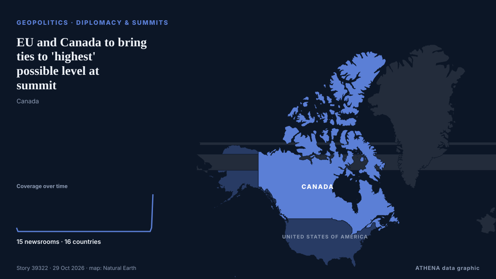

EU and Canada to bring ties to 'highest' possible level at summit

The EU and Canada want to bring their relationship to the "highest level possible" as they face a "world of growing rivalries," the 27-nation bloc's chief said Thursday ahead of a meeting with… из The Local Spain
Независимые источники: 15 изданий в 16 странах, с 15 апр.; первым сообщил CBC News (alternative feed); освещение идёт на спад. ATHENA оценивает риск как низкий (1.1/10), прежде всего из-за географического и отраслевого охвата и тяжести описываемого ущерба. Уверенность — 87 % (высокая); подтверждают независимые источники: 15 изданий, средняя надёжность источников — 76 %.
Почему это важно: События в сфере безопасности и дипломатии могут менять союзы, торговлю и рынки далеко за пределами непосредственно затронутых стран.
Что изменилось: 8 новых сообщений от 8 редакций за 24 часа до 29 окт..
Заголовки приводятся на английском языке, как они были опубликованы.
Коротко в цифрах
Отобрано, оценено и написано по опубликованной методологии ATHENA. Ни один редактор не вмешивается в отдельные события. Как это создаётся ›
| 15 Apr 08:17 UTC | 1 |
|---|---|
| 17 Apr 08:17 UTC | 0 |
| 19 Apr 08:17 UTC | 0 |
| 21 Apr 08:17 UTC | 0 |
| 23 Apr 08:17 UTC | 0 |
| 25 Apr 08:17 UTC | 0 |
| 27 Apr 08:17 UTC | 0 |
| 29 Apr 08:17 UTC | 0 |
| 01 May 08:17 UTC | 0 |
| 03 May 08:17 UTC | 0 |
| 05 May 08:17 UTC | 0 |
| 07 May 08:17 UTC | 0 |
| 09 May 08:17 UTC | 0 |
| 11 May 08:17 UTC | 0 |
| 13 May 08:17 UTC | 0 |
| 15 May 08:17 UTC | 0 |
| 17 May 08:17 UTC | 0 |
| 19 May 08:17 UTC | 0 |
| 21 May 08:17 UTC | 0 |
| 23 May 08:17 UTC | 0 |
| 25 May 08:17 UTC | 0 |
| 27 May 08:17 UTC | 0 |
| 29 May 08:17 UTC | 0 |
| 31 May 08:17 UTC | 0 |
| 02 Jun 08:17 UTC | 0 |
| 04 Jun 08:17 UTC | 0 |
| 06 Jun 08:17 UTC | 0 |
| 08 Jun 08:17 UTC | 0 |
| 10 Jun 08:17 UTC | 0 |
| 12 Jun 08:17 UTC | 0 |
| 14 Jun 08:17 UTC | 0 |
| 16 Jun 08:17 UTC | 0 |
| 18 Jun 08:17 UTC | 0 |
| 20 Jun 08:17 UTC | 0 |
| 22 Jun 08:17 UTC | 0 |
| 24 Jun 08:17 UTC | 0 |
| 26 Jun 08:17 UTC | 0 |
| 28 Jun 08:17 UTC | 0 |
| 30 Jun 08:17 UTC | 0 |
| 02 Jul 08:17 UTC | 0 |
| 04 Jul 08:17 UTC | 0 |
| 06 Jul 08:17 UTC | 0 |
| 08 Jul 08:17 UTC | 0 |
| 10 Jul 08:17 UTC | 0 |
| 12 Jul 08:17 UTC | 0 |
| 14 Jul 08:17 UTC | 0 |
| 16 Jul 08:17 UTC | 0 |
| 18 Jul 08:17 UTC | 0 |
| 20 Jul 08:17 UTC | 0 |
| 22 Jul 08:17 UTC | 0 |
| 24 Jul 08:17 UTC | 0 |
| 26 Jul 08:17 UTC | 0 |
| 28 Jul 08:17 UTC | 0 |
| 30 Jul 08:17 UTC | 0 |
| 01 Aug 08:17 UTC | 0 |
| 03 Aug 08:17 UTC | 0 |
| 05 Aug 08:17 UTC | 0 |
| 07 Aug 08:17 UTC | 0 |
| 09 Aug 08:17 UTC | 0 |
| 11 Aug 08:17 UTC | 0 |
| 13 Aug 08:17 UTC | 0 |
| 15 Aug 08:17 UTC | 0 |
| 17 Aug 08:17 UTC | 0 |
| 19 Aug 08:17 UTC | 0 |
| 21 Aug 08:17 UTC | 0 |
| 23 Aug 08:17 UTC | 0 |
| 25 Aug 08:17 UTC | 0 |
| 27 Aug 08:17 UTC | 0 |
| 29 Aug 08:17 UTC | 0 |
| 31 Aug 08:17 UTC | 0 |
| 02 Sep 08:17 UTC | 0 |
| 04 Sep 08:17 UTC | 0 |
| 06 Sep 08:17 UTC | 0 |
| 08 Sep 08:17 UTC | 0 |
| 10 Sep 08:17 UTC | 0 |
| 12 Sep 08:17 UTC | 0 |
| 14 Sep 08:17 UTC | 0 |
| 16 Sep 08:17 UTC | 0 |
| 18 Sep 08:17 UTC | 0 |
| 20 Sep 08:17 UTC | 0 |
| 22 Sep 08:17 UTC | 0 |
| 24 Sep 08:17 UTC | 0 |
| 26 Sep 08:17 UTC | 0 |
| 28 Sep 08:17 UTC | 0 |
| 30 Sep 08:17 UTC | 0 |
| 02 Oct 08:17 UTC | 0 |
| 04 Oct 08:17 UTC | 0 |
| 06 Oct 08:17 UTC | 0 |
| 08 Oct 08:17 UTC | 0 |
| 10 Oct 08:17 UTC | 0 |
| 12 Oct 08:17 UTC | 0 |
| 14 Oct 08:17 UTC | 0 |
| 16 Oct 08:17 UTC | 0 |
| 18 Oct 08:17 UTC | 0 |
| 20 Oct 08:17 UTC | 0 |
| 22 Oct 08:17 UTC | 0 |
| 24 Oct 08:17 UTC | 0 |
| 26 Oct 08:17 UTC | 1 |
| 28 Oct 08:17 UTC | 10 |
| 27 Oct 16:55 UTC | 0.0 |
|---|---|
| 29 Oct 00:59 UTC | 0.9 |
| 29 Oct 22:13 UTC | 1.1 |
Откуда эти цифры
Значимость
Риск
Уверенность
Освещение — кто сообщил и когда
заголовок в оригинале · открывает источник- CBC News (alternative feed) · Канада · CanadaEU dropping associate membership title for its closer alliance with Canada
- CBC News (alternative feed) · Канада · CanadaCanada's new relationship with EU will be 'closer to membership' than ever, senior officials say
- The Globe and Mail · Канада · CanadaCanada and EU drop idea of ‘associate member’ from summit declaration
- The Guardian · Великобритания · United KingdomEU backs away from offer to Canada to start ‘associate member’ talks
- France 24 English · Франция · FranceCanada and EU drop associate membership plan in bid to deepen ties
- RTÉ News · Ирландия · IrelandEU, Canada want to bring relationship to 'highest level'
- eNCA · Южно-Африканская Республика · South AfricaEU, Canada to build 'new chapter' in alliance at Montreal summit
- CBC News · Канада · CanadaWhy none of the EU's existing partnerships are the right fit for Canada
- Anadolu Agency (English) · Турция · TurkeyEU Commission says bloc united on closer ties with Canada despite reported divisions over 'associate membership'
- Arab News · Саудовская Аравия · Saudi ArabiaEU, Canada to bring ties to ‘highest’ possible level at Montreal summit
- The Local Spain · Испания · SpainEU and Canada to bring ties to 'highest' possible level at summit
- Novinite · Болгария · BulgariaCanada and EU Drop Associate Membership Plan, Pursue Closer Ties